Для установки этой библиотеки в терминале вводим команду:
npm install react-redux --saveДля чего нужна эта библиотека? Он играет роль посредника между UI и BLL (тоже самое что и контейнерная компонента, более того react-redux создает контейнерную компоненту с помощью метода connect)
Создание контекста с помощью react-redux ничем не отличается от создания обычного контекста. Все что нам нужно это обернуть в тег Provider компонент App и создать оболочке атрибут store и передать в него наш store
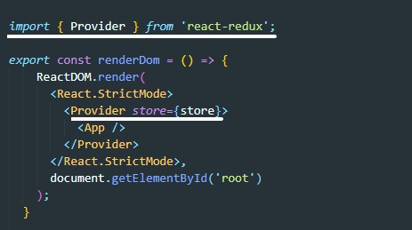Для создания контейнерной компоненты мы будем использовать метод библиотеки react-redux connect
Создаем отдельный файл. Перед использованием этого метода не забываем импортировать эту функцию
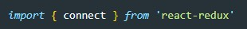Создаем контейнерную компоненту.
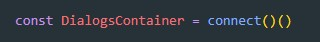О чем говорят два вызова () ()? Это значит что функция connect при первом вызове нам возвращает функцию. А вторым вызовом мы это функцию вызываем. В качестве аргумента второму вызову нам нужно передать компоненту, для которой наша компонента будет контейнером
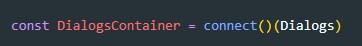Теперь надо нашей презентационной компоненте (в нашем примере это - Dialogs) передать пропсы и callback
Для этого создадим две вспомогательные функции, которые должны возвращать по одному объекту
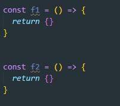Как вообще работает функцию connect? Он асоздает контейнерную компоненту, внутри этой контейнерной компоненты будет рендерится презентационная компонента, которая передана во втором вызове функции. Этой же презентационной компоненте будут переданы пропсы которые нам вернет функция f1 и колбеки которая вернет нам функция f2. Т.е. конечный результат создания контейнерной компоненты будет выглядеть вот так:
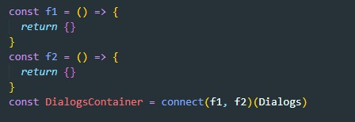Когда connect внутри себя вызовет эти две функции (f1 и f2) он передаст в качестве аргумента первой - state, а второй - dispatch
Так как наша презентационная компонента ожидает в пропсах атрибут state, то функция f1 будет выглядеть уже вот так:
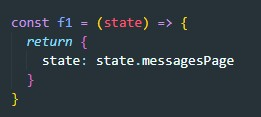Вторая функция должна создать объект с методами, эти методы будут переданы через пропс как колбеки. Вот как выглядит теперь функция f2
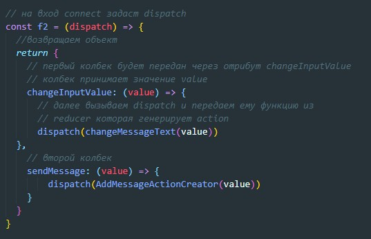Согласно документации первую функцию которая передает данные из state принято называть - mapStateToProps, вторую (та что передает callback) - mapDispatchToProps
Вот как в конечном результате выглядит наш код
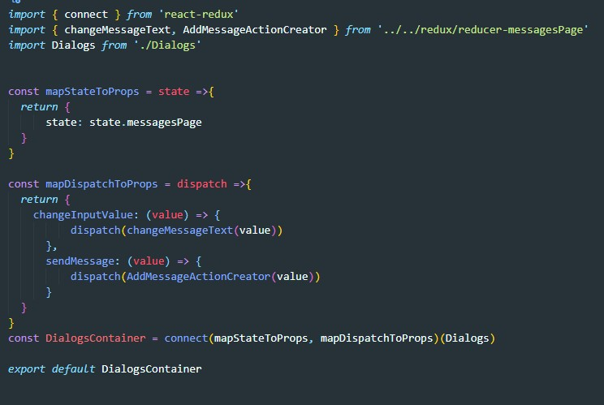Подытожим что мы сделали. Мы создали контейнерную компоненту, которая пробрасывает через пропсы нужный участок state и две callback функции. Эти callback функции получают какое-то значение и передают в dispatch какой-то action, который создали с помощью функций (changeMessageText и AddMessageActionCreator). В Dispatch эти action попадают в reducer где по идее мы меняем state... НО!!! Принцип работы react-redax построент так, что он не имеет права изменять текущий объект. Это называется принцип чистой функции. Мы получаем данные и что-то возвращаем. НО!! мы не имеем право изменять то что нам дали. Чистая функция не изменяем те параметры которая она получила. Она создает копию входных данных изменяет их и затем их возвращает. В итоге мы видим то что отрисовка изменений не происходит.
Первое что нам нужно сделать - это убрать функцию RenderDom. Т.е. файл index.js должен выглядеть вот так:
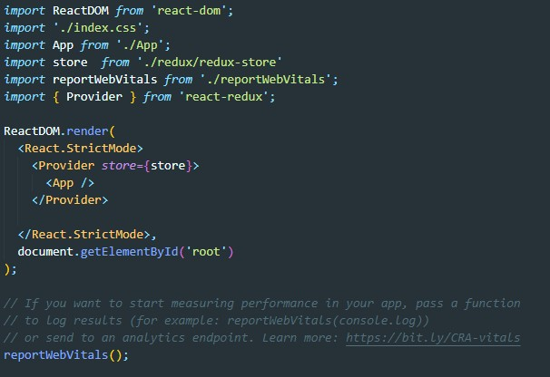Функция connect сама будет отрисовывать приложение в случае изменения в state. Как это работает? Каждый раз, когда был изменен state, происходит вызов функции mapStateToProps, т.е. формируется новый объект и этот новый объект сравнивается со старым (сравниваются внутренности объектов). Т.к. эти два объекта ссылаются на один и тот же объект, то JS считает их равными (см. сравнение объектов), а в случае если объекты равны connect не производит переррисовку приложения. Т.е. state по факту меняется, а перерисовка не происходит. Как быть?
Для выхода из этой ситуации в reducer необходимо создавать копию state, вносить изменения именно в копию, и возвращать копию. Вот как теперь будет выглядеть reduser
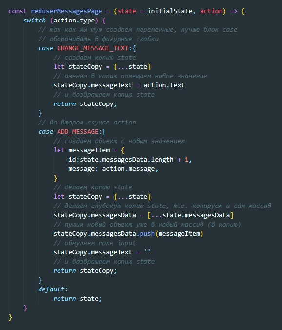После этого connect будет сравнивать два объекта которые будут ссылаться на разные источники (state и stateCopy) будет видеть их разницу, следовательно - перерисовывать приложение.
Если посмотреть на то как выглядит в данный момент функция mapDispatchToProps
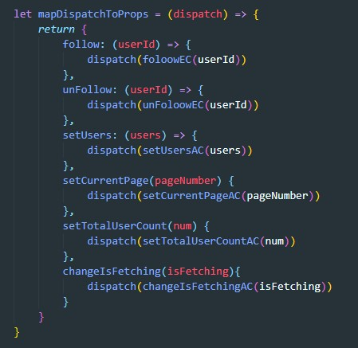то мы увидим что мы по сути повторяем один и тот же код. Мы получаем значение передаем его action creater и полученный результат диспатчим. Разработчики React-Redux создали возможность сокращения этого кода. Как это будет выглядеть? мы функции connect в первом вызове будем передавать не две функции (mapStateToProps и mapDispatchToProps), а функцию (mapStateToProps) и объект. Как должен выглядеть наш объект:

Т.е. ключ объекта это имя callBack функции которая прокинется в компоненты, а значение ключа это - actionCreator который мы создавали в reducer
Но и этот код мы можем сократить. Если в reducer функции action creator мы назовем так же как и callBack то наш объект будет выглядеть уже вот так
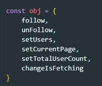Ну и конечно же нам незачем создавать этот объект мы просто его передаем в connect
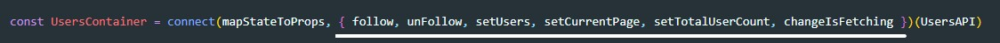